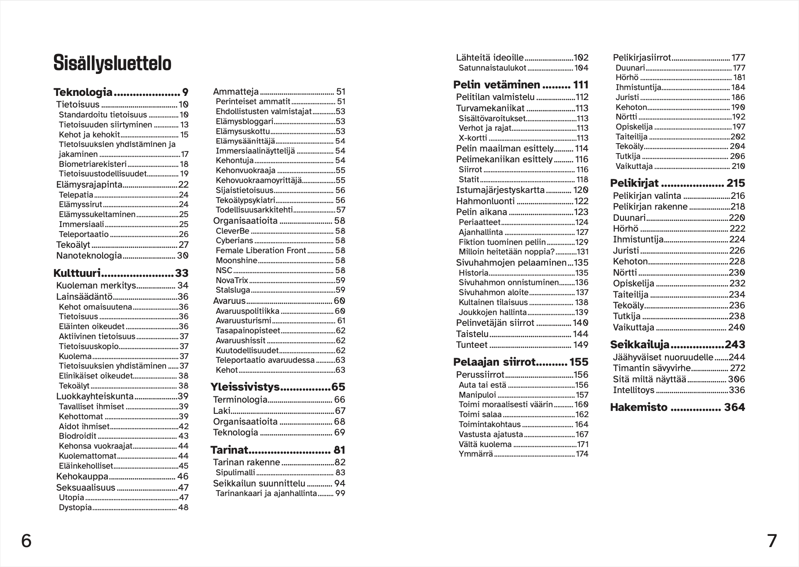
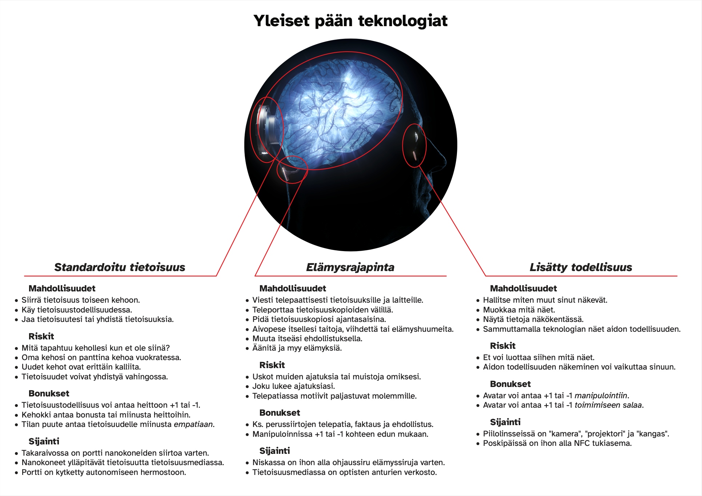
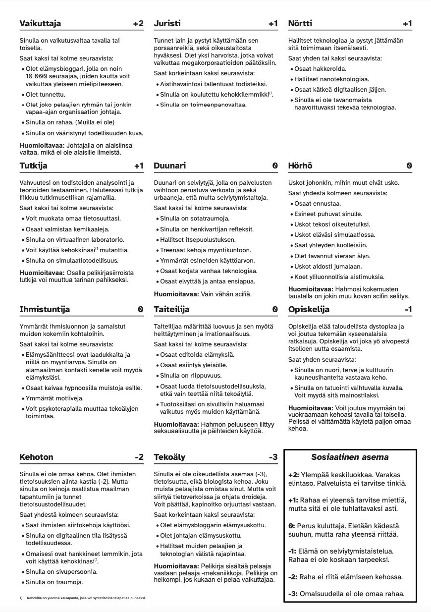
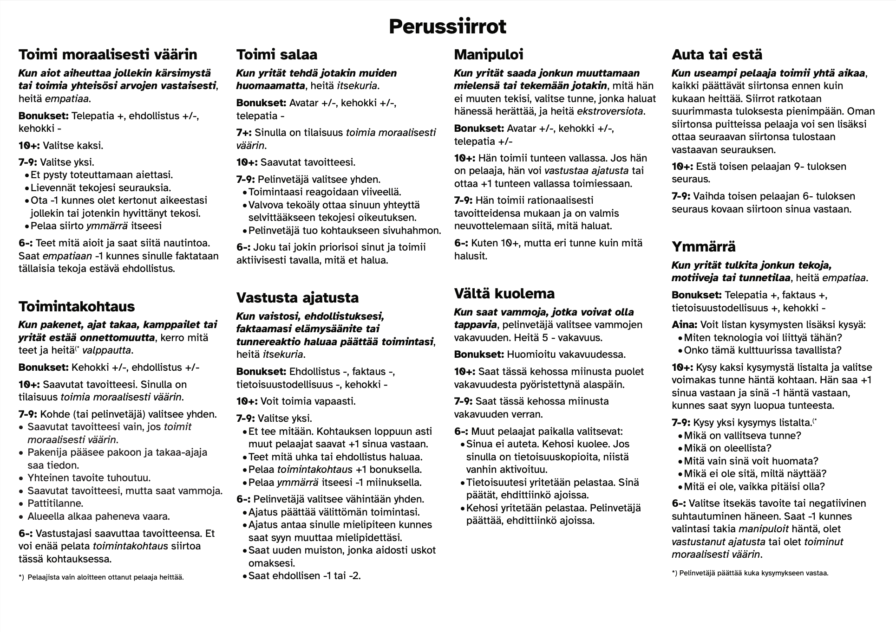

|
Tarinoita tietoisuuden ajalta
Tarinoita tietoisuuden ajalta on beta-testauksessa oleva transhumanistinen scifi-roolipeli, joka sijoittuu maapallon lähitulevaisuuteen. Teknologian kehitys on hämärtänyt ihmisyyden rajan. Tietoisuuden standardointi mahdollistaa tietoisuuden siirtymisen kehosta toiseen tai tietoisuustodellisuuteen. Kehoista on tullut tietoisuuksien omaisuutta. Elämysrajapinta mahdollistaa ajatusten lukemisen ja vapaaehtoisen aivopesun. Yhdessä nämä mahdollistavat teknologialla toteutetun telepatian.
Teknologian murros on vaikuttanut kulttuuriin. Kehokauppa on laillista ja kehon vuokraus yleistä. Taloudellinen eriarvoisuus näkyy kulttuurissa kun rikkailla on mahdollisuus ikuiseen elämään kehoa vaihtamalla kun taas köyhille tie rikkauteen on kehon myyminen ja pelkkä selviäminen voi edellyttää kehon antamista vuokralle.
Tarinoita tietoisuuden ajalta pelimekaniikka pohjautuu PbtA-formaattiin. Pelaajat pelaavat tietoisuuksia ja hahmojen ominaisuudet ovat tietoisuuksien ominaisuuksia kehojen ominaisuuksien sijasta.
Ensimmäinen painos
Ensimmäinen painos on lähetetty painoon. Fyysistä kirjaa testaamaan lupautuneet saavat kirjan postitse näillä näkymin arviolta 13.11.2026. Kirjat päätyvät Haarajoelle, Helsinkiin, Ouluun, Seinäjärvelle ja Tampereelle. Jos pelitestaaminen pelaajana kiinnostaa, lähetä viesti osoitteeseen feedback@eraof.net. Kerro viestissä yhteystietosi sekä edellä mainituista paikkakunnista se, jossa haluaisit peliä pelata, niin välitän viestin fyysisen kirjan saaneelle. En voi taata paikkaa pelipöydässä, koska kirjan saaneet viime kädessä päättävät pelin vetämisestä.
Sisällysluettelo

Teknologian esittely

Pelikirjat

Perussiirrot

Ropecon 2026
Vedin 2026 Ropeconissa pelistäni seikkailut Jäähyväiset nuoruudelle, IntelliToys ja Timantin sävyvirhe. Aiempina vuosina olen vetänyt neljää seikkailua, mutta tällä kertaa pudotin määrän kolmeen useasta eri syystä. Tämä osoittautui hyväksi ratkaisuksi, koska nyt minulla oli pelien välissä aikaa hienosäätöön pelikokemuksen perusteella.
Jäähyväiset nuoruudelle pelissä huomasin pelissä helposti toistuneen lyhyen lumipallon, joka kahden heiton jälkeen päätyi siihen, että mitään ei tapahtunut. Nostettiin odotuksia, mutta lopulta petettiin ne. Syynä tähän oli pitkälti se, miten ymmärrä siirron tulos 7-9 oli sanoitettu. Silloinen muotoilu antoi pelaajalle valtaa, jonka käyttäminen ei kyseisessä lumipallossa tuntunut mielekkäältä. Tätä muokkasin hiukan seuraavaan peliin, jotta itsensä ymmärtäminen toimisi paremmin. Toinen kriittinen havainto pelistä oli se, että koko seikkailun kliimaksiksi tarkoitettu tapahtuma ei pystynyt vaikuttamaan pelimekaniikkaan pelimekaniikan sanoituksen takia. Korjasin tämän antamalla pelinvetäjälle mahdollisuuden määrittää tilanteesta pelimekaaninen miinus. Kolmas muutos, mihin tässä vaiheessa päädyin, oli yhden pelaajan kommentti pelin voimatasosta. Tässä vaiheessa stattien summa oli +2, kuten monissa PbtA-peleissä, mutta nostin sen tasolle +3. Muutos on perusteltu, koska muissa peleissä voimatasoon on jätetty varaa hahmon kehittymiselle, mitä kertapelissä ei ole.
IntelliToys pelissä päädyttiin ymmärtämään itseään tosi usein. Kyseinen mekaniikka on tarkoitettu mahdollisuudeksi, joka nousisi peliin joskus harvoin, ja nyt se oli yksi yleisimmistä heitoista, joita pelissä heitettiin. Korjasin tämän sanoittamalla lumipallon lähtötilanteen siten, että itsensä ymmärtäminen ei ole eksplisiittinen seuraus, vaan yksi mahdollisuus rivien välissä. Tässä pelissä pelikirjoista olivat käytössä nörtti, duunari, hörhö ja ihmistuntija. Kaikista pelikirjoista minulle tuli tunne, että niitä käytettiin epäoptionaalisesti, mikä siis on minun, eikä pelaajan, vika. Esimerkiksi ihmistuntijan vahvuus on ymmärtäminen ja pelaajista hän pelasi sitä vähiten. Hörhön vahvuus on alhainen itsekuri, ja pelaaja valitsi siihen korkeimman mahdollisen arvon eikä koskaan aktivoinut pelikirjan siirtoja. Duunari käytti pakollista pelikirjasiirtoaan kerran, mutta sen vaikutus ei lopulta uinut peliin asti. Nörtin teknologiapuristi unohtui minulta, eli ne avut mitä asioiden muistamiseen pelinvetäjälle olen rakentanut eivät sitten pelissä käytännössä toimineet.
Timantin sävyvirheessä oli mukana pelikirjat duunari, hörhö, opiskelija ja ihmistuntija. Tällä kertaa hörhö loisti ja pitkälti varasti pelin. Opiskelija osoittautui aikasyöpöksi ja muotoilultaan epäselväksi. Isot pelikirjoihin käsikirjoitetut mahdollisuudet jäivät käyttämättä, vaikka pelikirjasiirrot olivat lähes räätälöityjä tilanteisiin, joita pelissä tuli vastaan. Tekoälypsykiatri ei yrittänyt korjata tekoälyn psykologista solmua eikä hörhö yrittänyt keskustella kuolleiden kanssa. Edelleenkään vika ei ole pelaajien ja vahvuuksien käyttämättä jättämien on täysin sallittua. Pelissä nousi esille myös yksi iso hölmöys, joka johtui siitä, että pelaajat eivät tunteneet pelin maailmaa niin hyvin kuin hahmot. Tähän minun pitää miettiä pelinvetäjän ohjeistusta, jotta aikaa ei tuhlata siihen, että hahmot nousevat ylös tuoleista, joihin hetkeä myöhemmin päättävät istua takaisin. Suurin anti pelin kehitykselle oli ehkä tarve suoraviivaistaa pelikirjoja. Päädyinkin sen jälkeen kirjoittamaan osan pelikirjasiirroista uusiksi monelta eri pelikirjalta. Lisäksi päätin luopua termeistä huti ja osuma, koska PbtA:ta tuntemattomat pelaajat voivat tulkita ne väärin.
Beta julkaisu
Vuoden 2025 Ropeconissa jaoin peliä pelanneille beta-versioita pelinvetäjänsuojasta. Ajatuksenani oli mahdollistaa muille pelinvetäminen ja kerätä pelin kehityksen tueksi tietoa siitä, miten muut peliä käyttävät. Beta oli minimalistinen, eli pelinvetäjän suojaan oli yritetty mahduttaa kaikki pelaamiseen tarvittava ja lisäksi pelimateriaalit, seikkailuja ja asioita "selventäviä" sekalaisia tekstejä oli netistä ladattavissa. Käytännössä tietooni on tullut vain kaksi beta-versiolla muualla vedettyä peliä. Jos olet sellaisen vetänyt tai Tarinoita Tietoisuuden ajalla peleihin osallistunut, olisin kiitollinen kevyestäkin peliraportista. Tiedon peliraportista voi lähettää osoitteeseen feedback@eraof.net.
Beta-versiosta paljastui vielä korjattavia ongelmia, joilla oli merkittävä vaikutus pelin mekaniikkaan. Aiempina vuosina sain paljon positiivista palautetta siitä, miten statit oli toteutettu, mutta kun vuoden 2025 versioon tein pienen kosmeettisen muutoksen statteihin, positiivinen palaute loppui kuin seinään. Syynä oli pitkälti se, että kyseinen kosmeettinen muutos toi selvemmin näkyville rakenteelliset ongelmat stattisysteemin taustalla. Tästä seurasi se, että hahmon statit piti vaihtaa, millä ymmärrettävästi oli varsin paljon vaikutusta peliin kautta linjan.
Toinen Beta-version ongelma oli lähestyttävyys. Ajatukseni oli, että kynnys kokeilla peliä olisi matala, jos saisin pelimateriaalin puristettua pieneksi. Siitä syntyi ajatus yrittää saada "kaikki" mahtumaan pelinvetäjän suojaan. Käytännössä asian kompleksisuus ei kuitenkaan muutu mihinkään sen seurauksena, että siitä kerrotaan vähemmän, joten kynnys kokeilla peliä oli korkea. Peliä Norjassa vetänyttä pelinvetäjää tuin vastaamalla kysymyksiin, kääntämällä tekstejä englanniksi ja muutenkin auttamalla parhaani mukaan. Hänen palautteensa oli mm. se, että hän ei olisi pystynyt vetämään pelillä mitään muuta seikkailua kuin sen, jonka itse oli pelannut, ja sitäkin vetäessä hän pelkäsi pelaajien tekevän jotakin, mihin vastaamiseen hänen tuntemuksensa pelistä ei riittäisi. Tämä sai minut ymmärtämään, ettei pelinvetäjän suoja ole riittävä formaatti pelin kokeilemiseen.
Arvosteluja
Peliraportti Norjassa beta-julkkistuksella vedetystä pelistä.
Projektin tilanne lokakuu 2026
Kirja on lähetetty painoon. Fyysiselle kirjalle on lupautunut 5 testaajaa, joista kolme on pelannut pelin aiempia versioita pelaajana ja yksi heistä on myös vetänyt pelin aiempaa versiota. Yksi lupautuneista testaajista on pelinvetäjänä aloittelija; muut ovat kokeneita roolipelaajia.